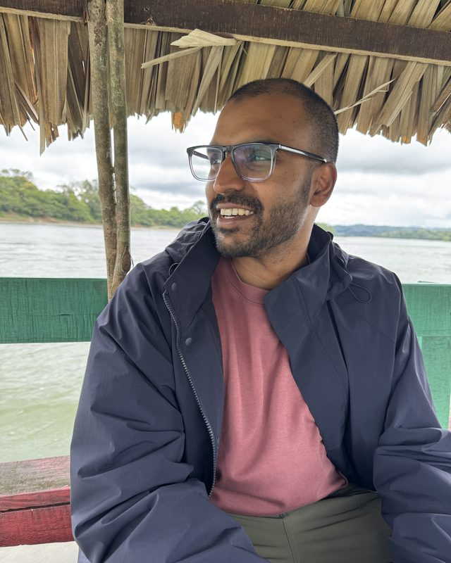

My work focuses on building AI-powered tools that make learning more engaging, accessible and meaningful, especially in public schools, vocational programs and underserved communities.
USA
I'm Vice President at Macmillan Learning's Innovation Labs group, where I lead work on AI, XR and emerging technology in K-12 and higher education. I'm also a Visiting Research Scholar at Stanford's Graduate School of Education, studying how AI and XR shape learning and youth agency.
India
I co-founded MakerGhat, one of India's largest makerspace networks, and serve on its board. Since launching in Mumbai in December 2018, it has reached over 2 million young people across 10,000+ schools in six states.
Before
I co-founded Inspirit and led it as CEO. We built immersive, AI-enabled VR tools for K-12 and vocational classrooms, raised over $9 million from investors including the founders of Yahoo and Oculus, and partnered with Meta, Snap and the NFL. At our peak in late 2025, Inspirit ran one of the largest XR programs in US K-12 education. The platform was acquired by Avantis Education (ClassVR) in February 2026.
Alongside
I sit on the board of Mantra4Change USA and advise a few organizations working on AI and education. At The Convergence Foundation, it's AI policy and ecosystem building in South Asia. At Shikha Labs, AI tools for teachers and students across India. With the Brookings Institution, AI and the redesign of California's high schools. With Dalberg, responsible AI adoption in Indian schools and universities. And at the Exploratorium, I'm on the advisory board of the Glassroom Initiative, thinking about how informal learning spaces can meet the AI moment for students in California.
Service
I review for NSF panels (RITEL, RETTL) and ACM venues including CHI, DIS and CSCW, and mentor at Stanford GSE's Education Entrepreneurship Hub.
Education
I earned my PhD in Learning Sciences from Stanford as a Knight-Hennessy Scholar, and my BS in Computer Science from Georgia Tech.
Along the way
My work has been featured in Nature, Freakonomics and The Indian Express, and recognized by Forbes 30 Under 30, the Ashoka Fellowship, Schmidt Futures, MIT Solve, SXSW EDU, Georgia Tech's 40 Under 40 and the Exploratorium Osher Fellowship.
Off hours
You'll usually find me on a trail somewhere, playing a Carnatic keerthanam on my violin, or in my kitchen making sambar for weekend brunch.